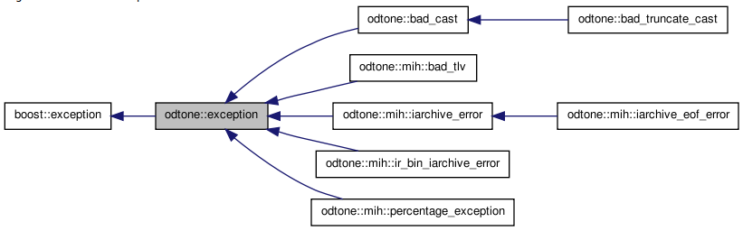
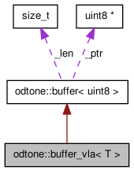

The BASE API offers mechanisms for debugging. This is done using a class named odtone::checkpoint.

It can be viewed as a linked list of checkpoints that maintain the execution status of the application. So, when a crash happens it is easy to check the last checkpoint and discover why it happen.
namespace odtone
checkpoint(const char* file, uint line, const char* exp); ~checkpoint(); static checkpoint* top(); checkpoint* previous() const; const char* file() const; uint line() const; const char* expression() const;
checkpoint(const char* file, uint line, const char* exp);
Construct a Checkpoint.
Parameters:
______________________________________________________________________________
~checkpoint ();
Destructor for checkpoint.
static checkpoint* top();
Get the checkpoint list.
Return:
______________________________________________________________________________
checkpoint* previous() const;
Get the previous checkpoint of the checkpoint that calls this method.
Return:
______________________________________________________________________________
const char* file() const;
Get the file name of the checkpoint.
Return:
______________________________________________________________________________
uint line() const;
Get the line number of the checkpoint.
Return:
______________________________________________________________________________
const char* expression() const;
Get the expression of the checkpoint.
Return:
______________________________________________________________________________

The BASE API offers support mechanisms for list management, providing operations to add or remove elements, get or swap elements and to reverse elements.
These can be considered as a double-linked list that consists of a sequence of data records such that in each record there is a field that contains a reference to the next record and to the previous record in the sequence.

This is done using a class named odtone::list_node that is explain next in this section.
namespace odtone
void init(); void push_front(list_node* node); void push_back(list_node* node); list_node* pop_front(); list_node* pop_back(); list_node* front(); list_node* back(); const list_node* front() const; const list_node* back() const; void swap(list_node& y); void reverse(); void remove(); bool empty() const;
void init();
Initialize the list only with the element that calls this method.
______________________________________________________________________________
void push_front(list_node* node);
Insert a new element in the first position of the list.
Parameters:
______________________________________________________________________________
void push_back(list_node* node);
Insert a new element in the last position of the list.
Parameters:
______________________________________________________________________________
list_node* pop_front();
Remove and return the first element of the list.
Return:
______________________________________________________________________________
list_node* pop_back();
Remove and return the last element of the list.
Return:
______________________________________________________________________________
list_node* front();
Return the first element of the list without removing it from the list.
Return:
______________________________________________________________________________
list_node* back();
Return the last element of the list without removing it from the list.
Return:
______________________________________________________________________________
const list_node* front() const;
Return the first element of the list without removing it from the list.
Return:
______________________________________________________________________________
const list_node* back() const;
Return the last element of the list without removing it from the list.
Return:
______________________________________________________________________________
void swap(list_node& y);
Swap the position of two elements of the list.
Parameters:
______________________________________________________________________________
void reverse();
Reverse the element in the list. In other words, it exchange the previous element with the next element of the checkpoint that calls this method.
______________________________________________________________________________
void remove();
Remove an element from the list.
______________________________________________________________________________
bool empty() const;
Check if the element has a null reference for the next element.
Return:
______________________________________________________________________________
The BASE API offers support mechanisms for logging, using odtone::logger class. The logger object is used to log messages for a specific system or application component. Logger names can be arbitrary strings, but they should normally be based on the application that invoke it.
Each logger has a level associated with it. This reflects the maximum level that the logger cares about. So if you set level to 2 it only cares about log messages belonging to level 0, 1 and 2.
It also has an std::ostream object associated with it. This defines how the logger write and format output as sequences of characters. The log messages can have up to 10 arguments.
namespace odtone
logger (char const* const name, logger& log); logger (char const* const name, std::ostream& sink); ~logger (); void level(uint n); uint level() const; std::ostream& sink () const ;
logger (char const* const name, logger& log);
Construct a Logger.
Parameters:
______________________________________________________________________________
logger (char const* const name, std::ostream& sink);
Construct a Logger.
Parameters:
______________________________________________________________________________
~logger ();
Destructor for logger.
void level(uint n);
Set the level configuration.
Each logger has a level associated with it. This reflects the maximum level that the logger cares about. So if you set level to 2 it only cares about log messages belonging to level 0, 1 and 2.
Parameters:
______________________________________________________________________________
uint level() const;
Get the level configuration.
Each logger has a level associated with it. This reflects the maximum level that the logger cares about. So if you set level to 2 it only cares about log messages belonging to level 0, 1 and 2.
Return
_____________________________________________________________________________
std::ostream& sink () const ;
Get the std::ostream associated with the logger.
Return
______________________________________________________________________________
The BASE API offers support mechanisms for exceptions support. The odtone::exception class serves as a base from which derive all exceptions in ODTONE. The following image represents all existing exceptions in the actual release.

The definition of new exceptions can be easily done. The following piece of code shows how it can be done:
struct new_exception : virtual public odtone::exception { new_exception() : exception("New exception example") { } };
The BASE API offers a simple way to generate random values. The following table match between the type of the random value with the function that generates it.
Table 3. Base data types
|
Data type |
Data type (ODTONE) |
|---|---|
|
sint8 |
odtone::mih::srand8() |
|
sint16 |
odtone::mih::srand16() |
|
sint32 |
odtone::mih::srand32() |
|
sint64 |
odtone::mih::srand64() |
|
uint8 |
odtone::mih::rand8() |
|
uint16 |
odtone::mih::rand16() |
|
uint32 |
odtone::mih::rand32() |
|
uint64 |
odtone::mih::rand64() |
This library also offers functions to convert to and from hexadecimal values.
std::string odtone::to_string_hex(const T& v);
uchar odtone::hex_to_int(odtone::uchar c);

The BASE API offers two classes that can be used as buffers: